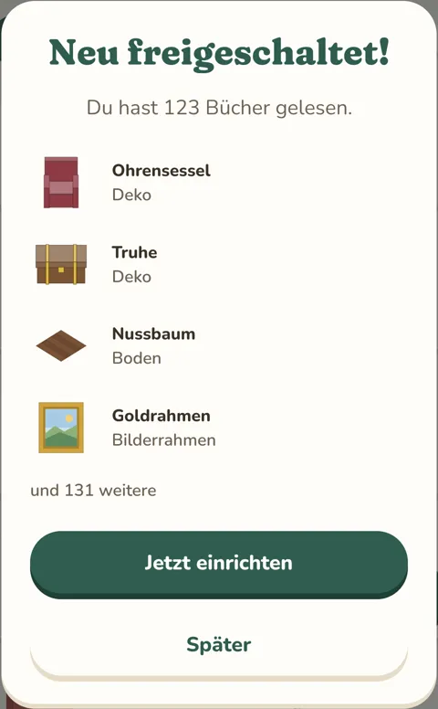
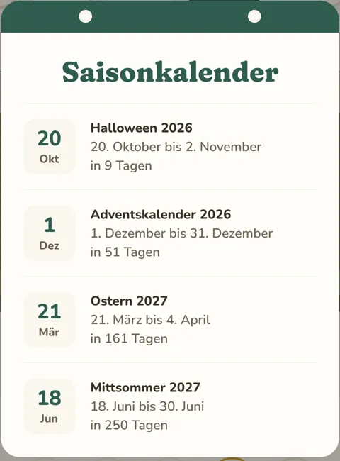
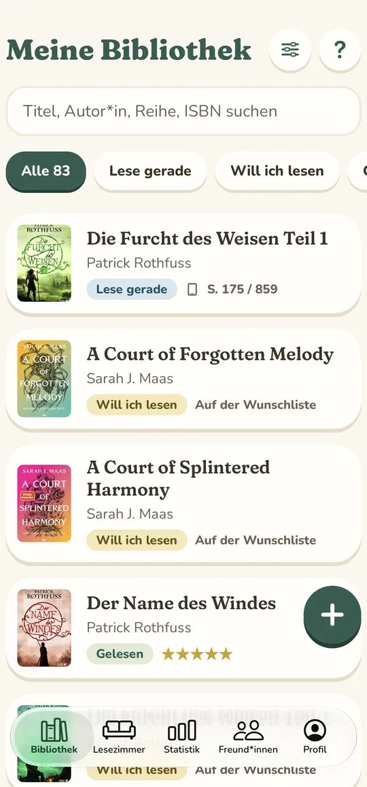
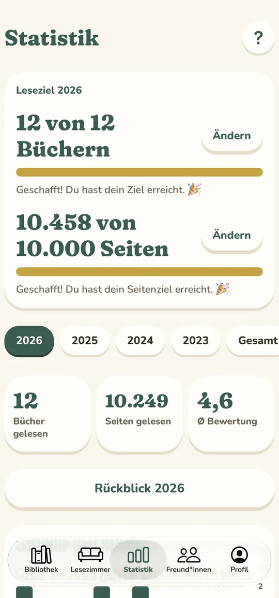
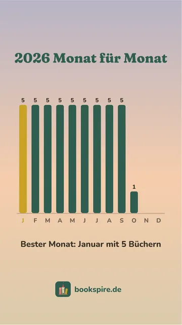
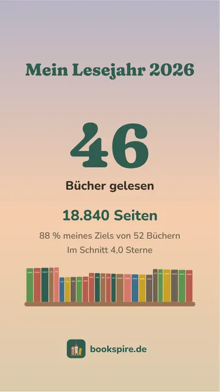
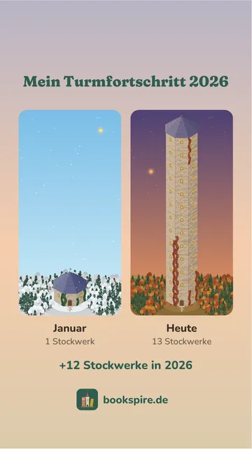
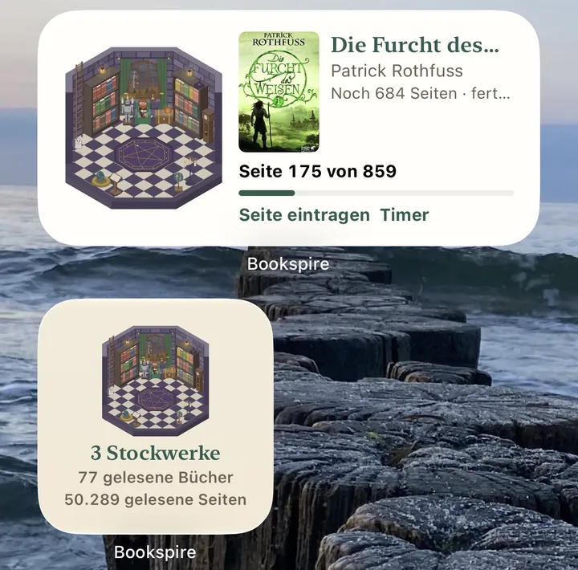
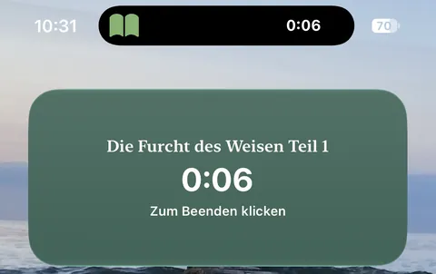

Status und Sterne
Gelesen, lese gerade, will ich lesen oder abgebrochen. Bewerte mit halben Sternen, schreib Notizen, markiere Favoriten. Beim Lesen schätzt Bookspire, wann du fertig bist.
Für alle mit zu vielen Büchern. Also für dich.
Bookspire hält fest, was du liest, und baut daraus ein Lesezimmer. Jedes beendete Buch zieht ins Regal, und sind die Regale voll, bekommt dein Turm ein neues Stockwerk. Gelesen wird wie immer: auf Papier, dem E-Reader oder als Hörbuch.

Kostenlos für iPhone und Android.
Im Bett, in der Bahn, auf Papier, dem E-Reader oder als Hörbuch. Deine Bücher holst du per ISBN-Scan, Suche oder Import aus Goodreads und Co.
Ein paar Klicks, und Bookspire weiß, auf welcher Seite du gerade steckst. Ist die letzte Seite gelesen, bekommt das Buch seine Sterne und eine Notiz, was es mit dir gemacht hat.
Jedes beendete Buch zieht ins Regal. Jedes, das du ab jetzt beendest, schaltet etwas Neues für dein Lesezimmer frei.
Jedes beendete Buch steht im Regal, den Buchrücken nach vorn, Seite an Seite mit all denen, die dich nachts wach gehalten haben. Was noch wartet, stapelt sich im Erdgeschoss. Ja, auch dein SuB bekommt seinen Platz. Und was du dir noch wünschst, steht auf einem Pergament gleich neben dem Regal. Ein Klick aufs Regal holt alle Titel ganz nah heran.
Sind alle Regale eines Stockwerks gefüllt, legt sich eine Zauberwolke um die Turmspitze, und dein Turm bekommt eine neue Etage. Von außen siehst du, wie weit du schon gekommen bist. Buch für Buch, Stockwerk für Stockwerk.
Ab dem dritten Stock kann ein offener Steinbogen das Fenster ersetzen. Dahinter liegt ein kleiner Balkon mit Holzgeländer, und von außen siehst du ihn aus dem Turm ragen.
Ein Ohrensessel für lange Kapitel. Kerzen für die Nächte, in denen nur noch eine Seite gelesen wird. Und dann noch eine. Wände aus Moosstein oder Sternenstein, ein Kamin statt des Fensters: Jedes Buch, das du ab jetzt beendest, schaltet etwas frei. Wo es steht und in welcher Farbe, entscheidest du.

Der Blick aus dem Fenster folgt Tag und Nacht, den Jahreszeiten und dem Wetter. Mal ziehen Wolken vorbei, mal prasselt Regen gegen das Glas, im Sommer zieht ein Gewitter auf, und im Winter fällt Schnee.
Zu Halloween, zu Ostern und zu Mittsommer warten besondere Saisons, und im Advent öffnest du jeden Tag ein Türchen mit etwas Neuem für dein Lesezimmer oder deinen Avatar.

Erstelle deinen Avatar. Er schlendert durch dein Lesezimmer, kuschelt sich in den Sessel und vergisst über einem Buch die Zeit. Mit jeder Seite, die du erfasst, kommen neue Kleidung, Frisuren und Farben dazu.
Von Anfang an ist für alle etwas dabei, von Locken und Afro bis zum Hidschab. Und wer mag, rollt im Rollstuhl durchs Zimmer und liest am Sessel.
Hinter dem Turm steckt deine ganze Bibliothek: Lesestatus, Bewertungen, Notizen, eine Statistik über dein Lesejahr und ein Leseziel für Bücher oder Seiten, das mitzählt. Wie bei Goodreads und Co. – nur dass hier aus Zahlen ein Zuhause wird.


Gelesen, lese gerade, will ich lesen oder abgebrochen. Bewerte mit halben Sternen, schreib Notizen, markiere Favoriten. Beim Lesen schätzt Bookspire, wann du fertig bist.
Jedes Buch in Sekunden gefunden, nach Autor*in sortiert, Reihen in der richtigen Reihenfolge. Mit eigenen Tags wie „Herbstlektüre“ oder „Comfort Read“ ordnest du alles so, wie es für dich Sinn ergibt.
Halte Sätze fest, die du nicht vergessen willst. Ein Foto der Buchseite genügt, den Text liest dein Handy selbst ab. Jedes Zitat lässt sich als Bild teilen.
Bring deine Bibliothek aus jeder App mit CSV-Export mit und nimm sie genauso einfach wieder mit: als CSV-Datei oder Sicherung.
Wie viele Bücher, wie viele Seiten, welcher Monat dein stärkster war und wie hoch dein Turm gewachsen ist: Bookspire fasst dein Lesejahr in Karten zusammen. Wisch durch, speichere sie in deinen Fotos oder teile sie direkt als Story.
Auch dein Lesezimmer und deinen Turm kannst du jederzeit als Bild teilen, im Story-Format und mit deinen Zahlen.



Für eine Seite zwischendurch musst du die App nicht erst öffnen. Widgets zeigen dein aktuelles Buch und dein Lesezimmer im Licht der Tageszeit. Ein Klick auf „Seite eintragen“, und dein Fortschritt ist erfasst.
Wenn du wissen willst, wie lange du wirklich liest, startest du den Lesetimer am Buch oder im Widget. Startest du ihn in der App, läuft die Uhr auf dem iPhone auch auf dem Sperrbildschirm und in der Dynamic Island mit.


Schau dir die Lesezimmer deiner Freund*innen an – und was gerade auf ihrem Stapel liegt.
Schick ein Buch mit einer Notiz. Mit einem Klick landet es auf der Leseliste.
Wer schafft diesen Monat die meisten Seiten? Ein kleiner Ansporn unter Freund*innen – mitmachen musst du nicht.
Was Freund*innen sehen, legst du selbst fest. Ohne Konto bleibt alles auf deinem Handy.
Unter deinem Turm liegt für jeden Buchclub ein Gewölbe aus Bruchstein, mit Laternen, einem runden Tisch und Regalen voller Bücher, die ihr gemeinsam gelesen habt.
Dort schlagt ihr Bücher vor und stimmt ab, was ihr als Nächstes lest. Beim aktuellen Buch seht ihr, wo alle gerade stecken, und das nächste Treffen landet mit einem Klick in deinem Kalender.
Ein Link genügt, um dazuzukommen. Beitreten ist kostenlos, einen eigenen Club gründest du mit der Gilde.

Gleich zu Beginn liegt ein Ei in deinem Lesezimmer. Mit jeder Seite, die du erfasst, wird es ein bisschen wärmer. Irgendwann zeigt sich der erste Riss.
Was daraus schlüpft? Das verraten wir nicht. Lies es selbst heraus.
Warum ich Bookspire baue
Ich bin Michael. Ich lese am liebsten High Fantasy, spiele Dungeons & Dragons und höre gern Metal. Bei D&D wächst eine Figur mit jedem Abend und trägt ihre Geschichte sichtbar mit sich herum. Von meinen Büchern blieben nur eine Liste mit Häkchen und eine Statistik, die sich nach nichts anfühlte.
Ich wünsche mir, dass du in ein paar Jahren in deinen Turm schaust und dich erinnerst: an das Buch, das dich nachts wach gehalten hat, an die Empfehlung, aus der ein Lieblingsbuch wurde. Kein Fortschrittsbalken, sondern ein Ort voller Geschichten, die du selbst erlebt hast.
Ich baue Bookspire allein, in meiner freien Zeit. Wenn dir ein Fehler auffällt oder du eine Idee für Bookspire hast, erreichst du mich unter kontakt@bookspire.de.
Nein. Du liest wie gewohnt, auf Papier, dem E-Reader oder als Hörbuch, und erfasst in Bookspire nur, wie weit du bist.
Gerade dann. Jede Seite zählt, und schon das erste Buch bringt etwas Neues in dein Lesezimmer. Ein Leseziel kannst du dir setzen, musst du aber nicht.
Dort sammelst du Listen und Diagramme. Bei Bookspire wird aus jedem Buch etwas, das du siehst: ein Regal, das sich füllt, ein Zimmer, das du einrichtest, ein Turm, der wächst. Deine Bibliothek aus Goodreads nimmst du einfach mit.
Zum Teil, und das möchte ich offen sagen. Ich baue Bookspire allein, und beim Programmieren hilft mir eine KI. Ohne sie könnte ich eine App dieser Größe als einzelne Person nicht bauen. Die Idee, die Gestaltung und jede Entscheidung darüber, was Bookspire kann und wie es sich anfühlt, kommen von mir. Jede Änderung teste ich selbst, bevor sie bei dir ankommt, und Freund*innen helfen mir dabei.
Auch die Bilder sind so entstanden: Raum, Turm und Gegenstände sind als Formen im Code gezeichnet und Schritt für Schritt verfeinert, bis alles zusammenpasst. Einen Bildgenerator habe ich nie benutzt, und kein Bild ahmt den Stil von Illustrator*innen nach.
In der App selbst steckt keine KI. Es gibt keine generierten Texte, keine Empfehlungen von einem Sprachmodell, und deine Daten trainieren kein Modell. Ich weiß, dass viele in der Buchcommunity KI kritisch sehen, und ich verstehe das gut. Gerade deshalb sollst du wissen, woran du bist.
Ja. Bookspire importiert deine Bücher aus Goodreads, BookBuddy oder jeder CSV-Datei. Bücher, die schon da sind, werden übersprungen. Und genauso einfach kommen sie wieder heraus: als CSV-Datei oder als Sicherung.
Ja. E-Books zählen in Seiten wie gedruckte Bücher. Bei Hörbüchern trägst du ein, wie viel Prozent du gehört hast, und Bookspire rechnet das in Seiten der gedruckten Ausgabe um. So wachsen Turm und Regale mit jedem Format.
Beitreten ist kostenlos, dafür reichen ein Konto und der Einladungslink. Wer einen Club gründet und leitet, braucht die Gilde.
Nein. Ohne Konto bleibt alles auf deinem Gerät. Mit Konto werden Bibliothek und Turm gesichert und synchronisiert, und du kannst Freund*innen finden. Mehrere Geräte zugleich synchronisierst du mit der Gilde.
Bookspire selbst enthält nichts, was Kinder nicht sehen sollten. Cover und Klappentexte kommen aber aus dem Buchhandel und zeigen, worum es in einem Buch geht, auch bei Romanen für Erwachsene. Deshalb ist Bookspire in den Stores ab 16 Jahren freigegeben, und ein Konto, mit dem du synchronisierst und Freund*innen findest, kannst du ebenfalls ab 16 anlegen. Ohne Konto bleibt alles auf deinem Gerät.
Nichts, und das bleibt so: Bibliothek, Erfassen, Statistik, Freund*innen und dein wachsender Turm sind kostenlos. Für alle, die mehr wollen, gibt es die Bookspire Gilde, ein Abo mit allen Etagen zum Einrichten, dem Gildenladen und der Gildenstatistik, für 2,99 € im Monat oder 24,99 € im Jahr.
Lade Bookspire herunter und lege in der App ein Konto mit derselben E-Mail-Adresse an, mit der du dich eingetragen hast. Dann zieht das Set „Erste Seite“ von selbst in deinen Turm. Das geht drei Monate lang nach dem Start, danach löschen wir die Warteliste.
Bookspire ist da, kostenlos für iPhone und Android. Dein erstes Buch wartet schon auf seinen Platz im Regal.